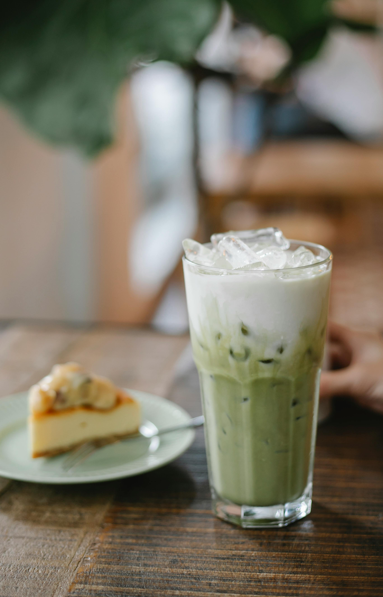

Refreshing matcha latte

This is a refreshing, simple and delicious matcha recipe for times when it's too hot outside, and You need energy and hydration.
To make this matcha, you'll need:
- Matcha powder 2tsp
- Oat milk 350ml
- Honey 1tsp
- Ice
- Hot boiled water 150ml
Preparations:
- Add matcha powder, honey and hot water into a small dish. Whisk it well until honey is dissolved.
- Put ice in the glass and pour milk.
- Add matcha mixture into the glass and mix it well.
Home